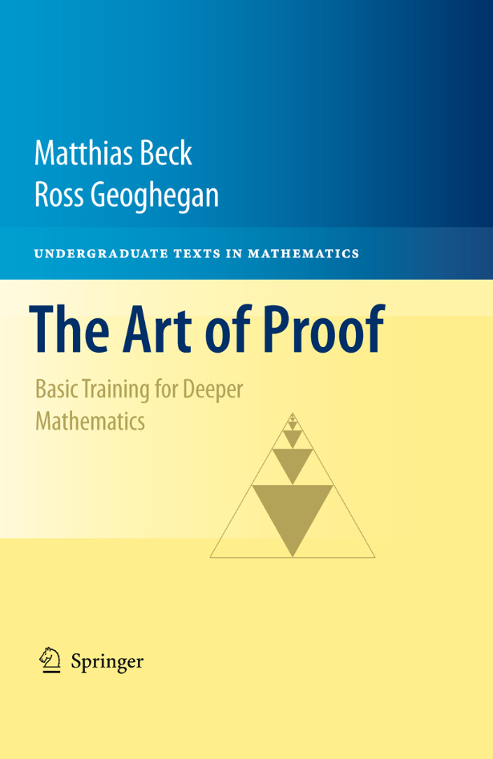

|
The Art of Proof: Basic Training For Deeper Mathematics is a book by Matthias Beck and Ross Geoghegan published by Springer in 2010. Here is a (nonprintable but searchable) pdf version of our book. (Please respect our copyright; this pdf version is only for individual use and should not be distributed.) If your library subscribes to SpringerLink and if this subscription includes The Art of Proof, then you can get a free printable pdf copy (and the hard copy for $25) here.
Among the core ideas in mathematics are: integer, induction, algorithm, real number, rational number, modular arithmetic, limit, and uncountable sets. And among the core methods of mathematics are: axiom, theorem, and proof. The Art Of Proof uses the one to teach the other. Rather than teaching proof tactics in the abstract, they are taught in the course of discussing interesting topics. Logic, set theory, and methods of proof are slipped in as needed. The Art Of Proof is a textbook for a one-semester or two-quarter course. A typical student will have studied calculus (perhaps also linear algebra) with reasonable success. The book may also be helpful to some older students of mathematics: high-school teachers, scientists and social scientists who find that the mathematics they studied at college is no longer sufficient for their needs. A mathematically precocious high school student should also be able to get an early start by reading this book. The authors take the position that the student knows a significant amount: they call this knowledge "Sesame Street through Calculus." With an artful mixture of chatty style and interesting examples, the student's previous intuitive knowledge is placed on solid intellectual ground. The book puts the instructor in control: some proofs are presented in detail, but the instructor decides which of the omitted proofs to present in class and which should challenge the student to discover a proof and write it down correctly. The Art of Proof is divided into two parts, The Discrete--dealing with integers, induction, modular arithmetic and algorithms--and The Continuous--dealing with real and rational numbers and with countability. The authors assume/hope/recommend that these two parts will be given equal time in the course. The book also includes a series of short essays on topics not covered in the main text, topics suitable for seminar-style presentation by small teams of students, either in class or in a mathematics club setting. These include: continuity, cryptography, groups, graphs, complex numbers, ordinal number and generating functions.
Excerpts from Reviews
"This book offers an approach well-balanced between rigor and clarifying simplification. Dilbert and Foxtrot cartoons with philosophical quotes presage the introduction of axioms and preliminary propositions. This graceful and witty blend succeeds well in a textbook for a post-calculus course transitioning a student to higher mathematics. The Art of Proof can also well serve independent readers looking for a solitary path to a vista on higher mathematics. I wish that as a high school student with a single semester of calculus behind me I had discovered this book and taken it in and then taken it with me on my university journeys.
At well under two hundred pages, this text seems to be light and cursory. But do not let that belie the depth of content contained therein. There is thoroughness and breadth to this work."
"This qualitative transition presents a most acute pedagogical challenge. [...] This book does feature definite mathematical content, contrasting with works that aim at decoupling purely logical apparatus from strictly mathematical concerns. [...] The authors write with the authority of research mathematicians and clearly mean to open that avenue to students. Summing Up: Recommended." (D. V. Feldman, Choice, Vol. 48 (8), April 2011) |  |
"Logic moves in one direction, the direction of clarity, coherence and structure. Ambiguity moves in the other direction, that of fluidity, openness, and release. Mathematics moves back and forth between these two poles. [...] It is the interaction between these different aspects that gives mathematics its power."
William Byers (How Mathematicians Think, Princeton University Press, 2007)